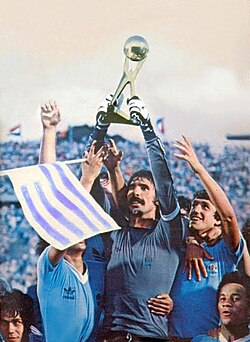

Uruguay tiene una historia gigante en los Mundiales pese a ser un país pequeño, porque fue anfitrión y campeón de la primera Copa del Mundo en 1930 ganándole 4-2 a Argentina en el Estadio Centenario, y volvió a hacer historia en 1950 con el famoso "Maracanazo" donde derrotó 2-1 a Brasil en su propio estadio Maracaná con más de 200 mil personas y rompió todos los pronósticos para ganar su segundo título, además llegó a semifinales en 1954, 1970 y 2010 donde Diego Forlán fue elegido mejor jugador del torneo, y aunque en las últimas ediciones no ha podido pasar de octavos o fase de grupos, los uruguayos siempre llegan con la "garra charrúa" que los hace pelear cada pelota como si fuera la última, representando con solo 3 millones de habitantes a uno de los países más ganadores del mundo con 2 estrellas en el pecho.
